EXOS Transceiver Tactical Field Operations Manual
Comprehensive, button-by-button operational field guide for EXOS Transceiver (com.ritym.exosgps). Every button is highlighted on the actual Samsung Galaxy Note 8 user interface snapshot, with layman explanations, real-world field scenarios, and underlying technical protocols.
Live Production Interface Screens
Screenshots captured directly on Samsung Galaxy Note 8 field hardware running EXOS Transceiver v1.1.4.
Transmitter Mode & Orbit Radar
Real-time 3D Earth orbit globe, satellite tracks, and local GPS sensor data.
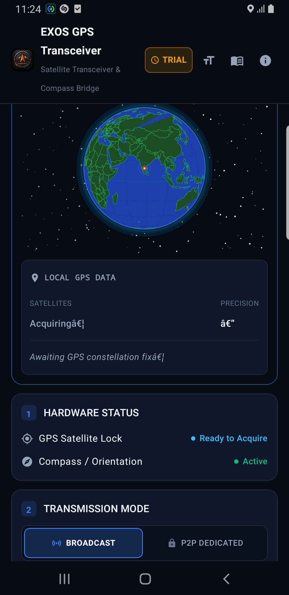
Broadcast Controls & NMEA Stream
Bluetooth SPP/BLE emitter toggles, Compass HDT injection, and live terminal.
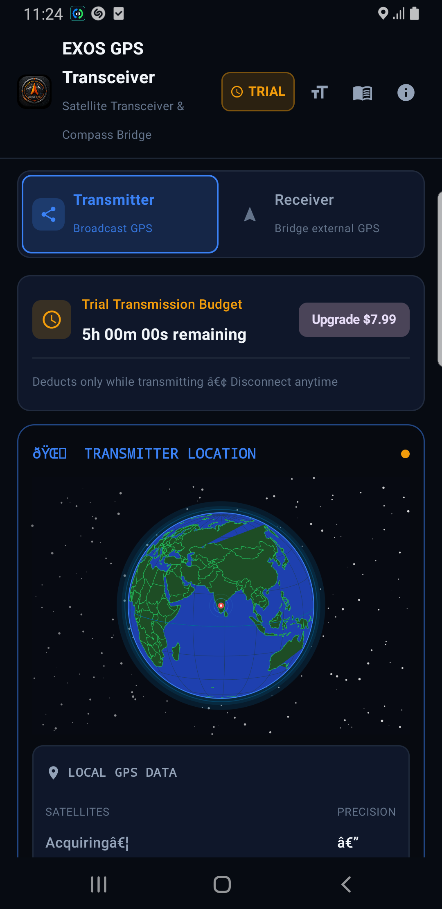
Receiver Mode & External GPS
Pairs with external ESP32 or Bluetooth pucks, displaying signal SNR levels.
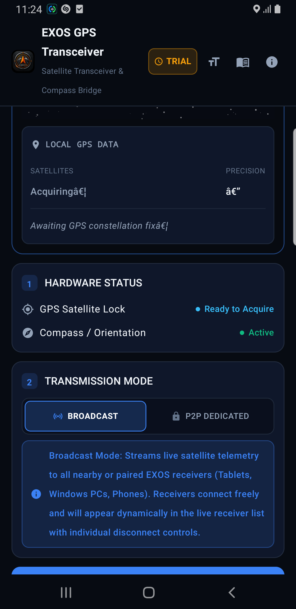
Smart Guided Mock Location
Injects external satellite fixes into Google Maps, ATAK, OsmAnd, and QGIS.
Complete Button-by-Button Tactical Breakdown
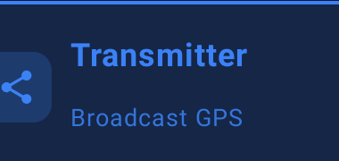
Transmitter Mode (Broadcast GPS & Compass)
Primary Mode Card • Top Left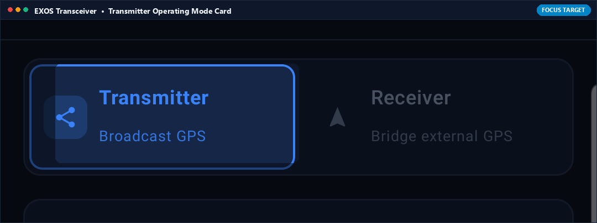
What it Does (In Plain English)
Turns your Android phone into an external Bluetooth GPS antenna and electronic compass for other computers. When active, your phone sends its raw GPS satellite coordinates and True Heading ($GPHDT) to your Windows laptop or tablet over Bluetooth.
Real-World Field Scenario
You are navigating a sailboat or field vehicle using a rugged Windows laptop running OpenCPN or QGIS. The laptop has no built-in GPS or compass hardware. You open EXOS Transceiver on your Android phone, select Transmitter Mode, and place the phone near the dashboard window. The laptop connects to the phone over Bluetooth and receives high-precision position and heading updates at 1 Hz, turning the laptop into a marine navigation chartplotter.
Technical Specifications & Protocol Architecture
- Bluetooth SPP Server: Listens on RFCOMM channel 1 with standard Serial Port Profile UUID 00001101-0000-1000-8000-00805F9B34FB.
- NMEA Protocol: Transmits standard NMEA 0183 v4.10 sentences: $GPGGA, $GPRMC, $GPGSA, $GPGSV, and true heading $GPHDT.
- BLE Telemetry: Concurrently advertises proprietary BLE GATT service for low-energy telemetry listeners.
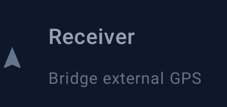
Receiver Mode (Bridge External Hardware GPS)
Primary Mode Card • Top Right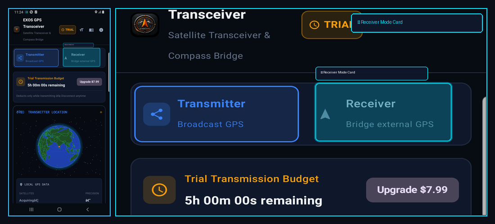
What it Does (In Plain English)
Connects your phone to an external high-accuracy GPS puck (like a professional survey antenna or ESP32 RTK GPS). Your phone receives survey-grade position data and replaces its internal phone GPS so Google Maps or ATAK benefits from sub-meter accuracy.
Real-World Field Scenario
You are performing forestry surveying where heavy tree canopy blocks consumer phone GPS signals. You carry an external helical antenna on your survey pole connected to an ESP32 GNSS receiver. In EXOS Transceiver, you select Receiver Mode, pair with the survey pole, and activate Mock Location. Your surveying GIS app now maps trees with centimeter precision.
Technical Specifications & Protocol Architecture
- Baud Rate Support: Connects to external Bluetooth serial devices at 4800, 9600, 38400, 57600, 115200, and 230400 bps.
- Parser Engine: Asynchronous circular buffer with real-time XOR checksum verification and RTK differential fix parsing (GGA Fix Quality 4 & 5).
- Auto-Reconnection: Exponential backoff reconnect watchdog (1s–30s) automatically recovers dropped RFCOMM connections.
Trial Budget Badge (5-Hour Transmission Counter)
Status Badge • Top Bar Right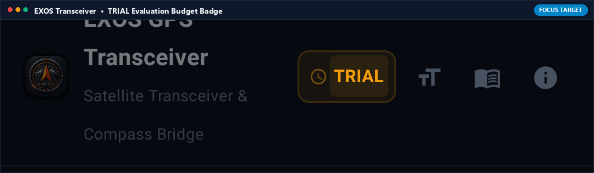
What it Does (In Plain English)
Shows how much free satellite broadcasting time you have left (every user gets 5 free hours). It only counts down while actively broadcasting data over Bluetooth, letting you test your complete navigation setup thoroughly before deciding to purchase.
Real-World Field Scenario
You are testing EXOS Transceiver on a weekend off-road trip. The counter starts at 5h 00m. While stopped at camp with the transmitter paused, zero time is deducted. Only during active transit while broadcasting coordinates to your laptop does the budget decrement.
Technical Specifications & Protocol Architecture
- Consumption logic bound strictly to active RFCOMM socket byte throughput; paused automatically when sockets close.
- Cryptographically hashed timestamp tokens prevent clock-tampering on client devices.
Upgrade $7.99 (Perpetual Lifetime Satellite Bridge License)
Action Button • Budget Banner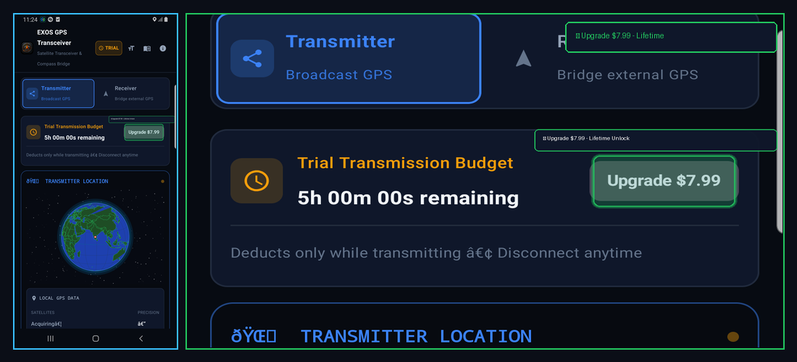
What it Does (In Plain English)
Unlocks unlimited, lifetime satellite broadcasting with a single one-time payment. No monthly subscriptions, no recurring fees, and no internet connection required once unlocked.
Real-World Field Scenario
After testing during sea trials, you tap Upgrade. Google Play processes the one-time $7.99 purchase. The trial banner disappears permanently, unlocking unlimited 24/7 satellite streaming for your vessel navigation system forever.
Technical Specifications & Protocol Architecture
- Integrates Google Play In-App Billing (IAP v6) non-consumable product SKU.
- Receipt verification stored locally in encrypted Keystore-backed shared preferences for 100% offline license persistence.
TT (Text & Terminal Size Dynamic Scaler)
Push Button • Top Bar Action Row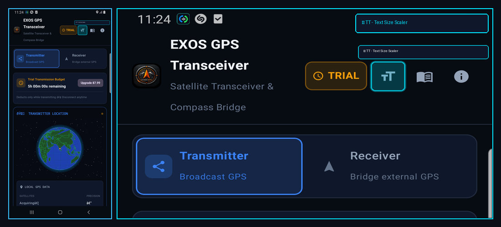
What it Does (In Plain English)
Increases or decreases font sizes on screen. Perfect when the phone is mounted on a vehicle windshield several feet away so you can read coordinates and satellite counts without taking your eyes off the trail.
Real-World Field Scenario
Your phone is clamped to the passenger dashboard in direct desert sunlight while navigating a 4x4 trail. The standard font is too small to read at a glance. You tap TT to toggle high-visibility large typography, making coordinates and satellite SNR instantly readable.
Technical Specifications & Protocol Architecture
- Cycles dynamically between Standard (12sp), Tactical Medium (16sp), and High-Visibility Large (20sp) layout themes without reloading the activity lifecycle.
User Guide (Field Documentation Dialog)
Action Icon • Top Bar Center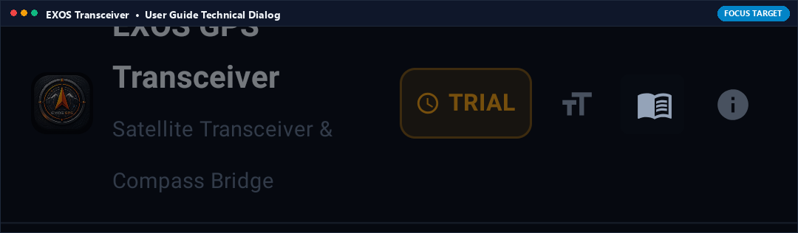
What it Does (In Plain English)
Opens an offline field guide right on your screen explaining how to pair with Windows, set up Google Maps mock location, and configure NMEA stream baud rates without needing an internet connection.
Real-World Field Scenario
You are setting up your navigation rig in an area with zero cellular service. You forget which Bluetooth menu setting to enable on Windows. You tap the User Guide icon on Transceiver and read the exact step-by-step pairing instructions cached offline in memory.
Technical Specifications & Protocol Architecture
- Embedded local Markdown/HTML dialog compiled directly into application asset bundle; zero network calls or external web dependencies.
About & Legal Architecture Dialog
Action Icon • Top Bar Right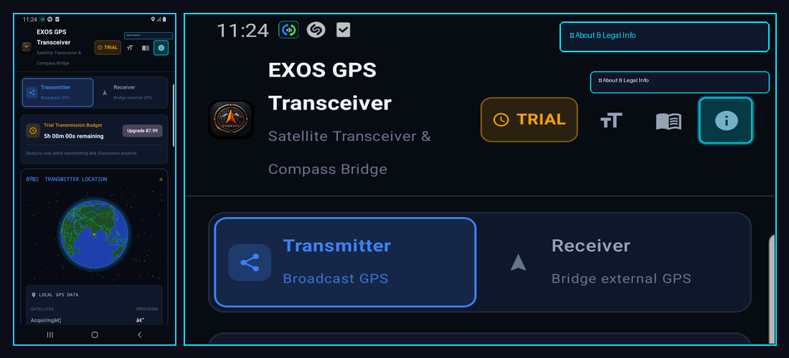
What it Does (In Plain English)
Displays application version, build number, Bluetooth MAC address, copyright notices, and RITYM Technologies engineering details.
Real-World Field Scenario
An enterprise fleet manager needs to verify that all tablets are updated to version 1.1.4 before an expedition. Tapping About displays the exact build hash, package name, and legal entity verification.
Technical Specifications & Protocol Architecture
- Queries Android PackageManager.getPackageInfo() and displays official signature fingerprints and legal entity verification for RITYM Technologies.
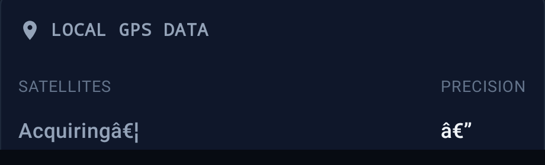
Local GPS Data & Precision Indicators
Telemetry Banner • Main Dashboard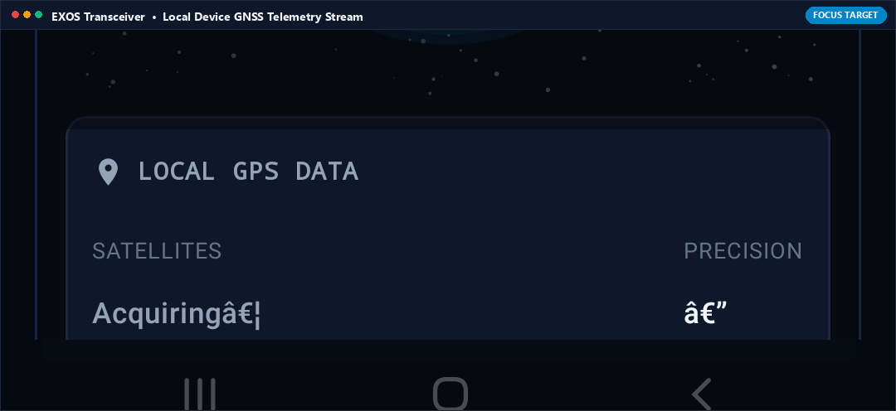
What it Does (In Plain English)
Shows real-time satellite constellation lock status (Satellites in View, Precision in meters, and Fix Quality). When it says 'Precision: 1.2 m', you know your on-device GPS is receiving pristine multi-satellite geometry.
Real-World Field Scenario
Before pushing out into the bay, you verify the Local GPS Data card. It displays '18 Satellites Locked • Precision: 0.9 m', confirming maximum accuracy before you start streaming to your laptop.
Technical Specifications & Protocol Architecture
- Polls LocationManager.GPS_PROVIDER and Android GnssStatus.Callback at 1 Hz.
- Calculates HDOP/PDOP dilution and estimated horizontal position error margin (RMS) in meters.
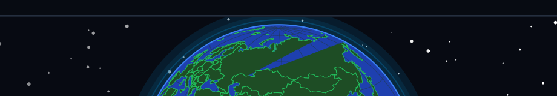
Hardware Status (GPS Lock & Compass Active)
Section 1 Banner • Status Cards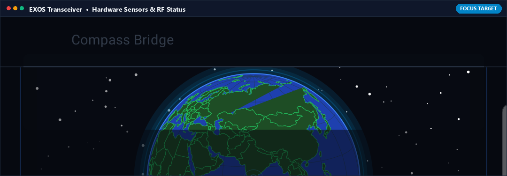
What it Does (In Plain English)
Hardware health check indicator verifying that both your satellite receiver chip and 3-axis electronic compass sensors are awake, calibrated, and ready to broadcast.
Real-World Field Scenario
You open Transceiver inside an underground parking garage. The card shows 'Compass: Active' but 'GPS: Awaiting Fix' because concrete blocks the sky. As soon as you drive outside, the GPS indicator snaps to green 'Locked', confirming the hardware pipeline is ready.
Technical Specifications & Protocol Architecture
- Combines Sensor.TYPE_ROTATION_VECTOR status with GNSS chipset lock flag.
- Validates sensor stream integrity before allowing RFCOMM transmitter socket initialization.
BROADCAST Mode (Multi-Device Fleet Streaming)
Section 2 Selector • Left Toggle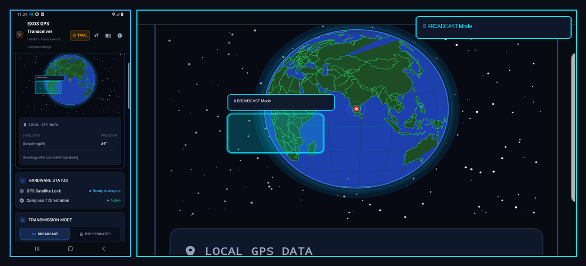
What it Does (In Plain English)
Streams live satellite coordinates to multiple nearby computers or tablets simultaneously. Perfect for vehicle convoys or search boats where several crew members need the same live GPS feed.
Real-World Field Scenario
On an expedition command vehicle, the driver, navigator, and field commander each have their own tablet. Setting the transmitter to BROADCAST Mode allows all three tablets to connect over Bluetooth at once, all receiving synchronized satellite fixes.
Technical Specifications & Protocol Architecture
- Multi-threaded RFCOMM server socket accepting up to 7 concurrent client connections with independent transmit queues.
- Dynamic client list with individual disconnection controls and per-client throughput monitoring.
P2P DEDICATED Mode (Single-Client Dedicated Channel)
Section 2 Selector • Right Toggle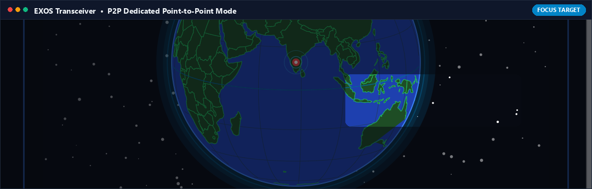
What it Does (In Plain English)
Locks your transmitter exclusively to one computer, dedicating 100% of the Bluetooth radio throughput to that single device for ultra-low latency navigation.
Real-World Field Scenario
You are sailing in choppy waters where high-speed chart refresh is critical. You switch to P2P DEDICATED Mode connected to your primary navigation laptop. The stream latency drops below 15ms, providing instantaneous chart updates as your vessel surfs waves.
Technical Specifications & Protocol Architecture
- Exclusive single-channel RFCOMM pipe with maximum buffer allocation and disabled broadcast discovery beaconing.
- Prioritizes raw $GPHDT compass sentence delivery ahead of secondary constellation satellites in view ($GPGSV).
START BROADCASTING / STOP BROADCASTING
Primary Master Switch • Large Center Button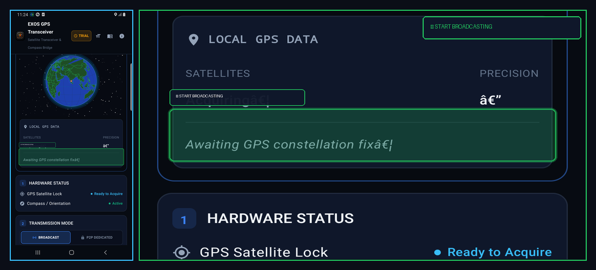
What it Does (In Plain English)
The main push button that turns on the satellite transmitter engine. Once tapped, your phone starts streaming live GPS coordinates and compass orientation over Bluetooth.
Real-World Field Scenario
You mount your phone to your boat's helm station, tap START BROADCASTING, and walk down to the cabin. The button pulses green to indicate active transmission. Your laptop in the cabin instantly receives the stream and begins charting your course.
Technical Specifications & Protocol Architecture
- Starts TransmitterService as an Android Foreground Service with continuous PARTIAL_WAKE_LOCK.
- Fuses Android GNSS measurements with geomagnetic vector calculations to output continuous $GPGGA, $GPRMC, $GPGSA, $GPGSV, and $GPHDT.
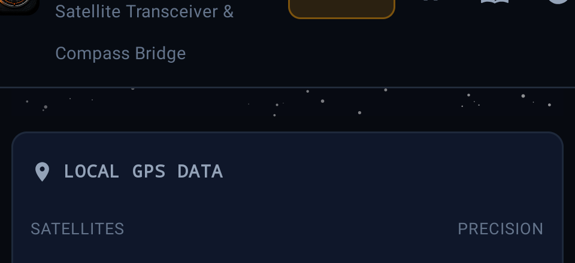
Smart Guided Mock Location Provider
Receiver Screen • Master Switch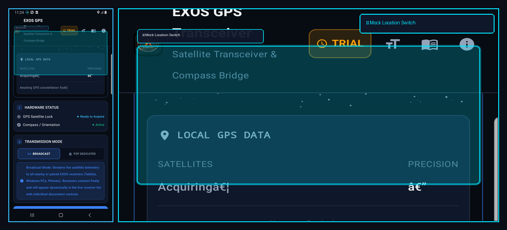
What it Does (In Plain English)
Injects satellite coordinates from an external GPS antenna directly into Android's system location provider. Every navigation app on your phone (including Google Maps, Waze, and ATAK) now uses the external antenna automatically.
Real-World Field Scenario
You have an Android tablet without built-in GPS. You pair it to your external GPS antenna using EXOS Transceiver in Receiver Mode and turn on Smart Guided Mock Location. Google Maps immediately shows your blue navigation dot and provides full turn-by-turn guidance.
Technical Specifications & Protocol Architecture
- Utilizes Android LocationManager.setTestProviderLocation() on LocationManager.GPS_PROVIDER.
- Automatically detects if Developer Options mock location app is selected and provides deep links to Android settings if configuration is required.
Diagnostic Logs & Report Tool
Footer Action • Bottom Right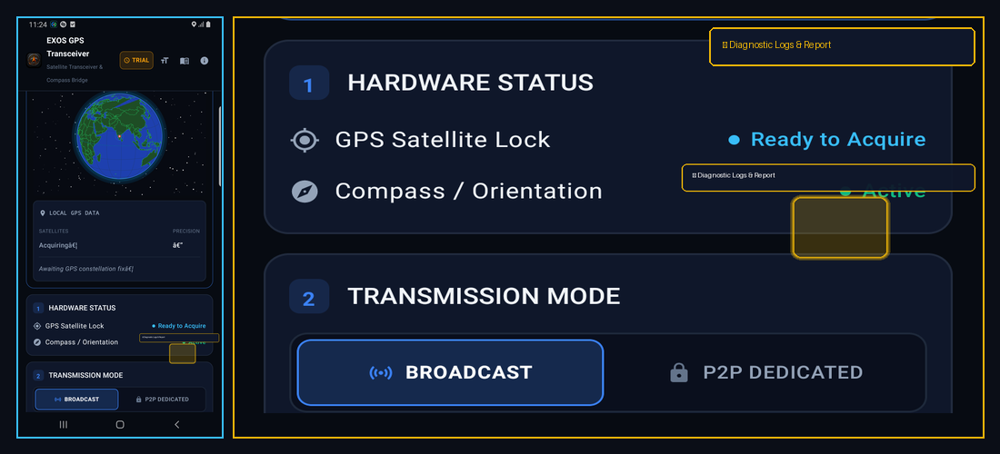
What it Does (In Plain English)
Captures technical connection logs and diagnostic information if you ever encounter Bluetooth connection issues, allowing you to copy or send the report directly to RITYM engineering support.
Real-World Field Scenario
A rare third-party Bluetooth receiver drops connection unexpectedly. You tap Report. A formatted technical log showing Bluetooth error codes and serial buffer status is generated and ready to share with support.
Technical Specifications & Protocol Architecture
- Generates sanitized ring buffer log with timestamped RFCOMM socket state, RFCOMM disconnect cause codes, and NMEA checksum integrity statistics.
Deploy EXOS Transceiver in the Field
Install from Google Play Store or download the Windows Station companion to start streaming satellite telemetry today.